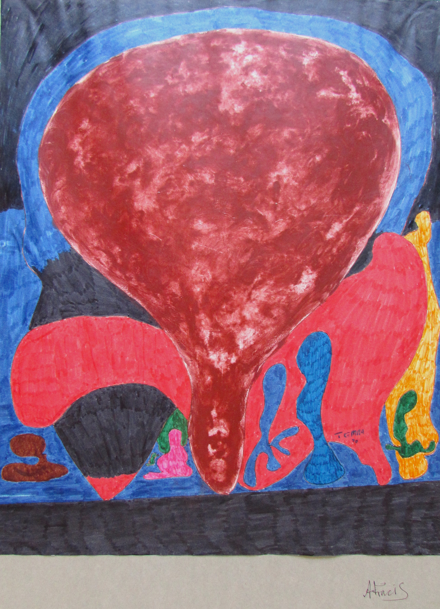

Armet Francis
b.1945
Artist Biography
Armet Francis was born in Jamaica in 1945, moving to join family in London in 1955. He is best known as one of the foremost photographers of Black Britons from the 1960s onwards, later capturing in addition images of the African diaspora in the US, the Caribbean and elsewhere. However, in the 1970s as well as his photography he also painted in an expressionist and abstract style that drew on African iconography. He rarely displayed these paintings, keeping them in a personal archive, although he did show some, along with his photography, at a 1975 exhibition at the Jamaican High Commission in London. After this period Francis concentrated on photography to widespread acclaim. He participated in FESTEC ’77 in Lagos, Nigeria and in 1983 was the first Black photographer to be given a solo exhibition at the Photographers’’ Gallery in London. Major subsequent shows included a group show at Tate Modern in 2021 called Life Between Islands where his work graced the catalogue cover and a solo show in 2024 at the Autograph Gallery in London (to whom he subsequently donated his entire photography archive). It was also in 2024 that his paintings from the 1970s made a reappearance when the Morley Gallery in London put on an exhibition of six artists’ work titled The Generations: Figures of Vision, showcasing the work of the early Afro-Caribbean artists and matching them with upcoming talent. Here Francis showed both his photography and his paintings from the 1970s. Major institutions holding Francis’ photography in the UK include the Tate Modern, Victoria & Albert Museum and Museum of London, whilst the Brooklyn Museum of Art in the US also holds his work. A public grant has helped fund an on-line archive of Armet Francis’ work, which includes his paintings as well as the photography.

Untitled, 1970